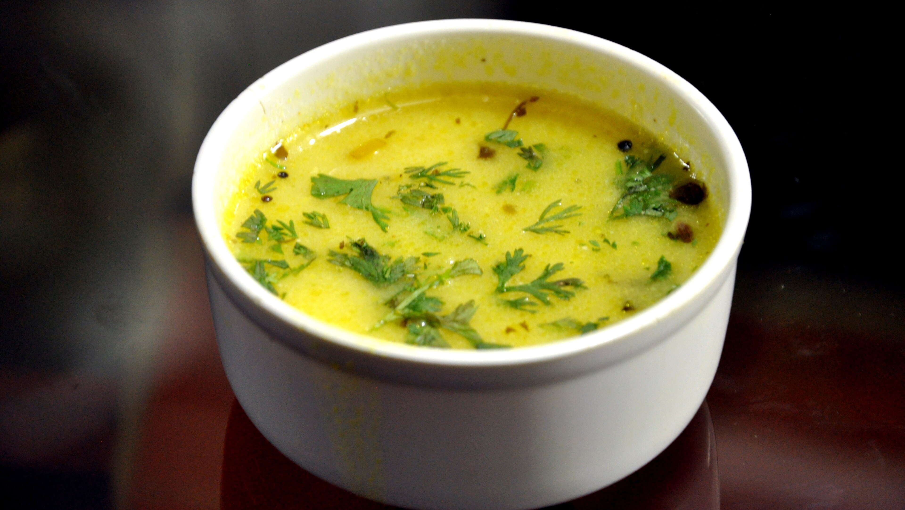

Gujarati kadhi
Rooted in tradition, prepared by the next generation

Dish photo by Dheerajk88 (Wikimedia Commons)
Ingredients:
- Plain yogurt (dahi)
- Water
- Besan (gram flour)
- Salt
- Turmeric powder
- Grated ginger
- Green chili (finely chopped)
- Ghee or oil
- Mustard seeds
- Fenugreek seeds (methi)
- Asafoetida (hing)
- Small cinnamon piece
- Fresh coriander (chopped)
Steps:
- Whisk 1 cup yogurt, 2 tbsp besan, and 2½ cups water until smooth
- Add ¼ tsp turmeric, 1–2 tbsp sugar or jaggery, salt, 1 tsp grated ginger, and 1 chopped green chili; mix well
- Pour into a pot and cook on medium, stirring continuously until it gently boils
- Lower heat and simmer 10–12 minutes until slightly thick and smooth
- In a small pan, heat 1–2 tbsp ghee or oil
- Add ½ tsp mustard seeds (let pop), ½ tsp cumin seeds, 4–5 methi seeds, 1 dry red chili, pinch hing, and 8–10 curry leaves; cook 15–20 seconds
- Pour tempering into kadhi
- Simmer 2 minutes, turn off heat, add chopped coriander, rest 5 minutes, serve